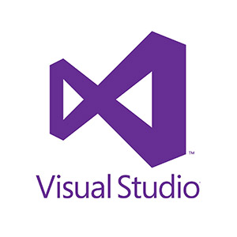
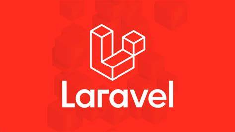
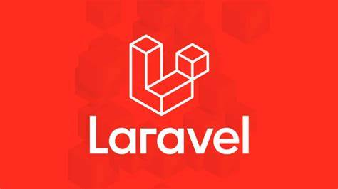
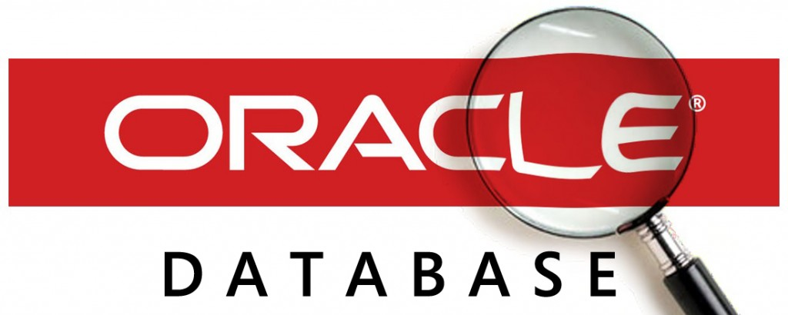

MEDIC ID
Desarrollo de una aplicación movil: Agosto-Diciembre,2021
Medic Id
Este desarrollo de aplicacion para dispositivos moviles formo parte de un proyectorealizado en grupos para un curso en la universidad de Puerto Rico en Bayamon. En este grupo yo era la lider encargada de que todo saliera bien. Trabajamos el desarrollo con visual Studio en C#, utilizamos bases de datos y un sin numero de diseños.
People Care
Proyecto de analisis: Enero 20217
EXPERIENCIA INOLVIDABLE
Estabamos en con la pandemia en su apojeo, cuando me entero de una competencia de ideathon por el Covid-19. creo un grupo de trabajo de 4 personas y nos aventuramos a competir con personas a nivel mundial. Nadie creia en nosotros ni en nuestra idea, asi que decidimos buscar a un menton por nuestra cuente quien nos brindo las herramientas para no desmotivarnos y llegar a aganar la competencia.
Sobre mi

Actualmente estoy en mi cuarto año en la Universidad de Puerto Rico en Bayamón, estudio un bachillerato en Ciencias de la Computación. Mi pasión es ayudar en el campo de la tecnología para que otros puedan satisfacer sus necesidades. Quiero ayudar a mejorar mi entorno con el uso de la tecnología. Me he ofrecido como voluntario en campamentos como Compuchi@s 2022 solo para ayudar a otra persona a encontrar una pasión por la programación.
Habilidades
Lenguajes de programacion


Entornos de desarrollos

 

Sistemas Operativos

Bases de datos


Otros
Estracurricular
- Vocal de la asociacion del departamento 2022-2023
- Vocal de la asociacion del departamento 2020
- Voluntaria campamentos compuchic@s 2022
- Miembro de organizacion come vaquero
- Participante de competencias de programacion